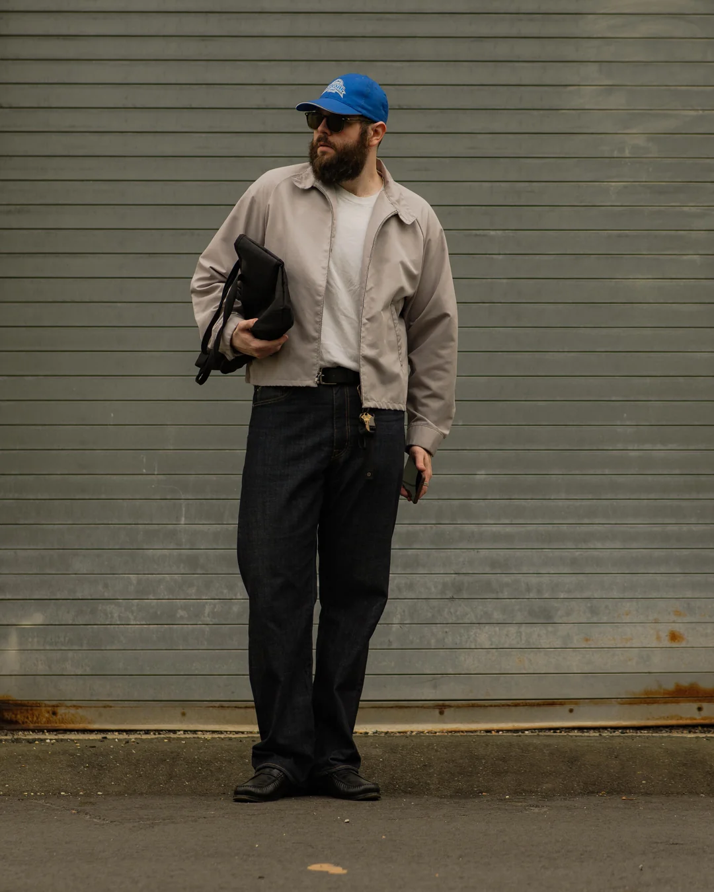

Hey guys, what's your favorite game of all time? I'm currently stuck on a decision
between The Last
of
Us
and Overwatch. Has anyone else played either of those? And what do you think makes them so great?

26
127
Daniel
1h ago
Cool outfit! I really like everything about it
Larry
3h ago
To be fair, I think you could count the number of people who understood the lore
from a single playthrough on 0 hands (it's 0).
Its great because it's hidden, it takes some unpicking, but the world feels all the more real for the
little hints you stumble on during your first playthrough.
I really do doubt that anybody figured out the underlying plot first time through though, and 99% of
players watch the mossbag (or similar) summary to understand it properly.
Daniel
1h agoCool outfit!
I really like everything about it
Larry
3h agoTo be fair, I think you could count the number of people who understood the lore from a single playthrough on 0 hands (it's 0). Its great because it's hidden, it takes some unpicking, but the world feels all the more real for the little hints you stumble on during your first playthrough. I really do doubt that anybody figured out the underlying plot first time through though, and 99% of players watch the mossbag (or similar) summary to understand it properly.